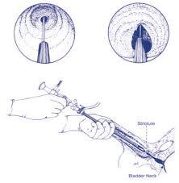

Kidney Stone

DJ STENTING

TURP

URETROTOMY
Our comprehensive services allow you to perfectly match your needs, lifestyle, and goals. Our comfortable office, compassionate team, and minimally-invasive treatments will help you feel completely at ease. tell us about your experience using the button down below.
THESE DAYS LOT OF PEOPLE FACING UROLOGY PROBLEMS CAN CONTACT US WITH THIS NEW WAY.